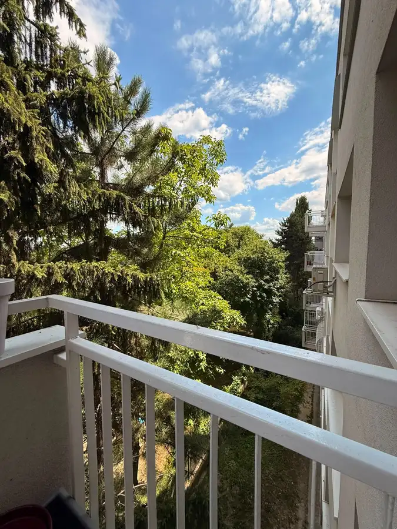

Moderný 2-izbový byt s výhľadom | Janotova ul
Karlova Ves, Bratislava

- Dispozícia2-izbový
- Plocha53 m²
- Poschodie3.
- Stavpo rekonštrukcii
- Vlastníctvoosobné
O nehnuteľnosti
Realitná kancelária Metrixreal Vám exkluzívne ponúka na prenájom moderný, kompletne zariadený 2-izbový byt na Janotovej ulici v obľúbenej a pokojnej lokalite Dlhé diely (Bratislava – Karlova Ves).
Byt je ideálnou voľbou pre jednotlivca alebo pár (nefajčiarov, bez detí a domácich zvierat), ktorí hľadajú komfortné bývanie v tichšej rezidenčnej štvrti s výbornou dostupnosťou do centra mesta aj do vysokoškolského areálu Mlynská dolina. Praktická dispozícia a kompletné vybavenie umožňujú okamžité nasťahovanie bez potreby ďalších investícií.
ZÁKLADNÉ INFORMÁCIE
Druh nehnuteľnosti: 2-izbový byt
Celková výmera: 54 m² (podlahová plocha 53 m² + balkón 1 m²)
Poschodie: 3. poschodie
Výťah: nie
Pivnica: nie
Trvalý pobyt: možný (po súhlase majiteľa)
Dostupnosť: voľný od 15. 8. 2026
DISPOZÍCIA
Byt má prakticky riešenú a účelnú dispozíciu. Vstupná chodba disponuje veľkou skriňou s dostatkom úložného priestoru. Z chodby sa samostatne vstupuje do kúpeľne so sprchovacím kútom a do oddeleného WC.
Srdcom bytu je presvetlená obývacia izba prepojená s kuchynským kútom. Z obývačky je nádherný výhľad na ikonické UFO a časť Bratislavského hradu. Z kuchynskej časti sa plynule prechádza do samostatnej nepriechodnej spálne, ktorá poskytuje súkromie a pokoj na oddych.
VYBAVENIE
Byt sa prenajíma kompletne zariadený a vybavený.
Kuchyňa: plynová varná doska, samostatná vstavaná elektrická rúra, digestor, zabudovaná mikrovlnná rúra a umývačka riadu.
Obývacia izba: pohodlný gauč, poličky a klimatizačná jednotka.
Spálňa: manželská posteľ (180 × 200 cm), priestranná skriňa, komoda a pekné zrkadlo.
Ďalšie vybavenie: Wi-Fi internet, vysávač, centrálne kúrenie.
Podmienky nájmu: Byt je nefajčiarsky. Domáce zvieratá ani deti nie sú povolené. Byt je ideálny pre 1 až 2 dospelé osoby.
LOKALITA & LIFESTYLE
Mestská časť Karlova Ves – Dlhé diely patrí medzi najobľúbenejšie lokality v Bratislave vďaka perfektnému spojeniu plnej mestskej infraštruktúry a bezprostrednej blízkosti prírody.
Doprava a výborná dostupnosť: Priamo pri dome zastavuje trolejbus č. 33 a autobus č. 32. Na blízkom dopravnom uzle Riviéra pohodlne prestúpite na električky č. 4 a 9 smerujúce do centra.
Príroda, lesy a relax: Pre milovníkov aktívneho životného štýlu, behu či prechádzok je táto lokalita ideálna. V pešej dostupnosti sa nachádzajú lesy Malých Karpát, Park Suchá Vydrica, Karloveské rameno Dunaja aj Areál Minigolf Karlovka. Lokalita ponúka aj priame napojenie na cyklotrasy.
Občianska vybavenosť: Všetko potrebné je na skok – potraviny Billa, Terno a Lidl, fitnescentrum, materské školy, základné školy aj gymnáziá. Na príjemné posedenie poslúži obľúbená Karloveská Klubovňa či Cukráreň u Babičky.
Pre koho je byt ideálny?
Pre aktívny pár alebo jednotlivca, ktorí oceňujú tiché prostredie, blízkosť lesa a rýchly prístup do centra aj na cyklotrasy.
Pre študentov, doktorandov či akademických pracovníkov, keďže univerzitný areál Mlynská dolina (UK a STU) je dostupný pohodlne pešo.
CENA A PODMIENKY
Mesačné nájomné: 600€ / mesiac
Zálohy za energie, služby a Wi-Fi internet: 250€ / mesiac
Celková cena: 850€ / mesiac (vrátane energií a Wi-Fi)
Vratná kaucia: 850€
Provízia pre RK: 850€ (vo výške 1-mesačného nájmu)
PREČO PRÁVE TENTO BYT?
Kompletne zariadený interiér pripravený na okamžité bývanie
Ikonický výhľad na UFO a Bratislavský hrad priamo z obývačky
Klimatizácia pre komfort počas horúcich dní
Wi-Fi internet v cene nájmu
Vlastný balkón
Možnosť trvalého pobytu (po súhlase majiteľa) – kľúčová výhoda pre parkovanie v zóne PAAS
Skvelá poloha pri lesoch, cyklotrase na Devín aj Karloveskom ramene
Pešia dostupnosť vysokoškolského areálu v Mlynskej doline
ZAUJAL VÁS TENTO BYT?
Ak hľadáte pokojné, kompletne zariadené a praktické bývanie s výhľadom na dominanty mesta a výbornou dostupnosťou do prírody aj do centra, radi Vám poskytneme viac informácií alebo dohodneme osobnú obhliadku.
Sme členom Realitnej únie SR, čo pre Vás znamená absolútnu garanciu férového, transparentného a bezpečného priebehu celej transakcie.
KONTAKT PRE OBHLIADKU
Bc. Vladyslav Chornyi – realitný maklér
Telefónne číslo:
E-mail:
Metrixreal – Realitná kancelária
E-mail: | Tel.:
Neváhajte a dohodnite si obhliadku nehnuteľnosti ešte dnes!
Parametre
- Celková rozloha
- 54 m²
- Úžitková plocha
- 53 m²
- Poschodie
- 3/vyššie poschodie
- Počet izieb
- 2
- Vlastníctvo
- osobné
- Stav
- po rekonštrukcii
- Status
- prenajaté
- Plyn
- áno
- Internet
- wifi
- Kúpeľňa
- sprchovací kút
- Vykurovanie
- áno
- Balkón
- áno
- Lódžia
- nie
- Terasa
- nie
- Pivnica
- nie
- Garáž
- nie
- Výťah
- nie
- Postavené z
- tehla
- Zariadenie
- zariadený
- Zateplený objekt
- áno
- Krb
- nie
- Klimatizácia
- áno
- Káblová televízia
- nie
- Predzáhradka
- nie
- Okná
- plastové
- Orientácia
- východná
- Dátum zverejnenia
- 2026-07-25
Kde to je
Mohlo by Vás zaujímať
 BytNové
Cena na vyžádáníPrenájom: Priestranný 3-izbový byt (68 m²) s loggiou a panoramatickým výhľadom – Petržalka, Gessayova ulica
Petržalka, Bratislava
3-izbový68 m²12. podlažie
BytNové
Cena na vyžádáníPrenájom: Priestranný 3-izbový byt (68 m²) s loggiou a panoramatickým výhľadom – Petržalka, Gessayova ulica
Petržalka, Bratislava
3-izbový68 m²12. podlažie
 BytNové
1 100 €Luxusný 2-izbový byt v SKY PARK s priamym výhľadom na Bratislavský hrad
Staré Mesto, Bratislava
2-izbový50 m²15. podlažie
BytNové
1 100 €Luxusný 2-izbový byt v SKY PARK s priamym výhľadom na Bratislavský hrad
Staré Mesto, Bratislava
2-izbový50 m²15. podlažie
 BytNové
115 000 €STAVBÁRSKA 40 | VRAKUŇA | Zariadený a klimatizovaný 2-izbový byt 38 m² s 2 samostatnými izbami | Výborná investícia s overeným 2-ročným nájomcom alebo
Vrakuňa, Bratislava
2-izbový38 m²4. podlažie
BytNové
115 000 €STAVBÁRSKA 40 | VRAKUŇA | Zariadený a klimatizovaný 2-izbový byt 38 m² s 2 samostatnými izbami | Výborná investícia s overeným 2-ročným nájomcom alebo
Vrakuňa, Bratislava
2-izbový38 m²4. podlažie